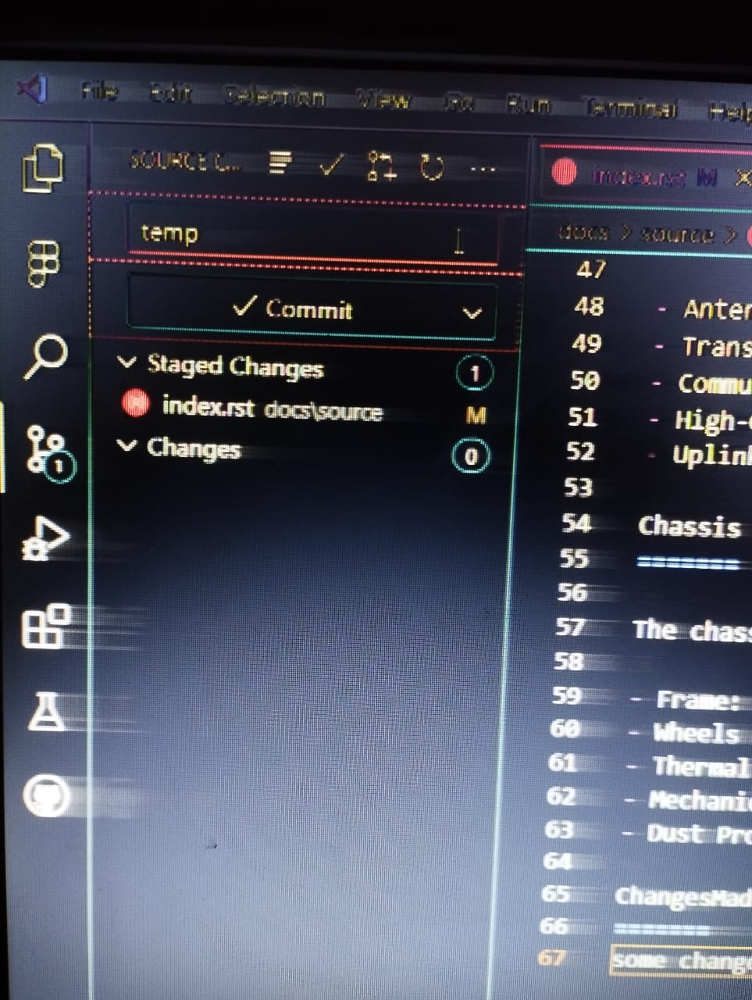
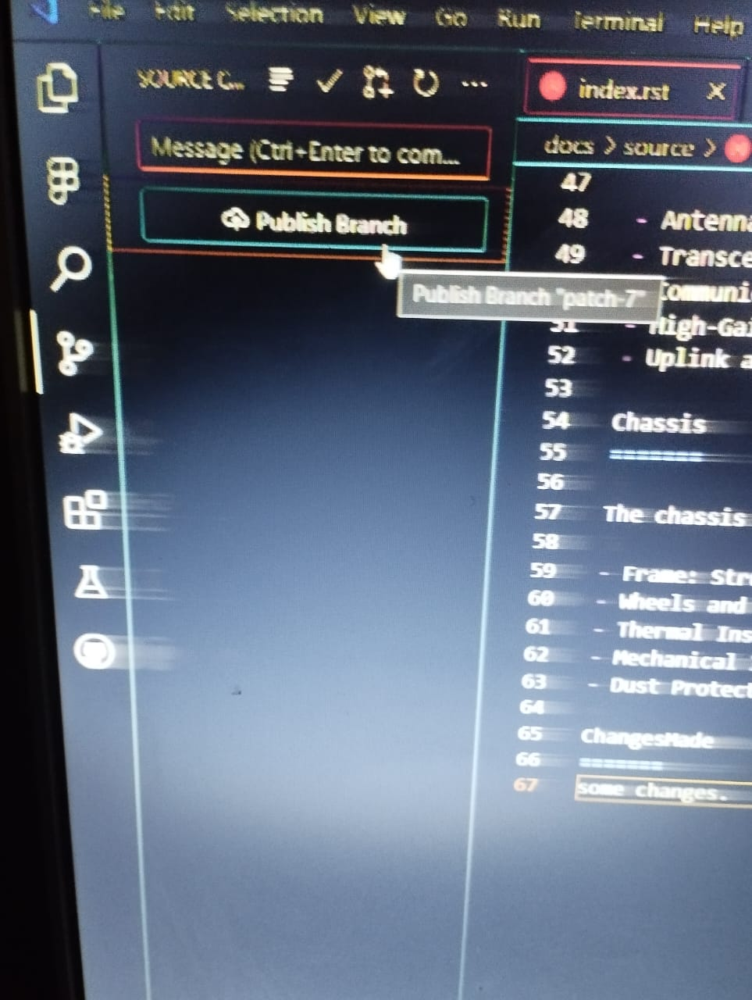

Getting Started
First, install Visual Studio Code if not installed.
After installing, open VS Code, click on Source Control, and then click on Download Git for Windows.

Which will redirect you to the page shown below. Then download the setup according to your PC.

Make sure while installing it you are choosing the default editor used by Git as Use Visual Studio Code as Git's default editor.

And then simply install it.
Now visit this github repository Github Repo.
Click on the green button as Code.
And copy the link Shown as below.

After Copying the Link.
Go to your Desktop, right click on desktop and open in terminal.
And write command as git clone COPIED LINK.

Then press Enter. By this you have successfully clone the git repository.
It will show on the Desktop as folder name webTask0.

Now open the vs code, on the top left corner go to file->open folder->Desktop and then select folder named as webTask0.

It will open Like.

Now in the vs code press Ctrl+Shift+P.
write git in the search bar. It will show as Git:Add Remote, click on it.

Now paste the link using Ctrl+V that you have copied from the GitHub Repo, and press Enter.

Now enter any kind of remote name of your choice and press Enter.

Now you have successfully linked to the repository.
Now visit the below given link. https://sphinx-tutorial.readthedocs.io/step-1/
Learn some basics of rst.
Now open vs code. go to docs->source->index.rst.

After opening index.rst file make changes whatever you want using the rst and then save it.

After saving, go to source control.

Now click on the bottom left main*.

Now click on Create new branch.... Provide any new branch name, and then press Enter. Now click on + icon which will stag changes. Now write any commit, eg temp.  Now click on the "Tick-icon" as commit. Now it will ask for chose the remote so choose the remote that you have created. And now click on Publish Branch. 